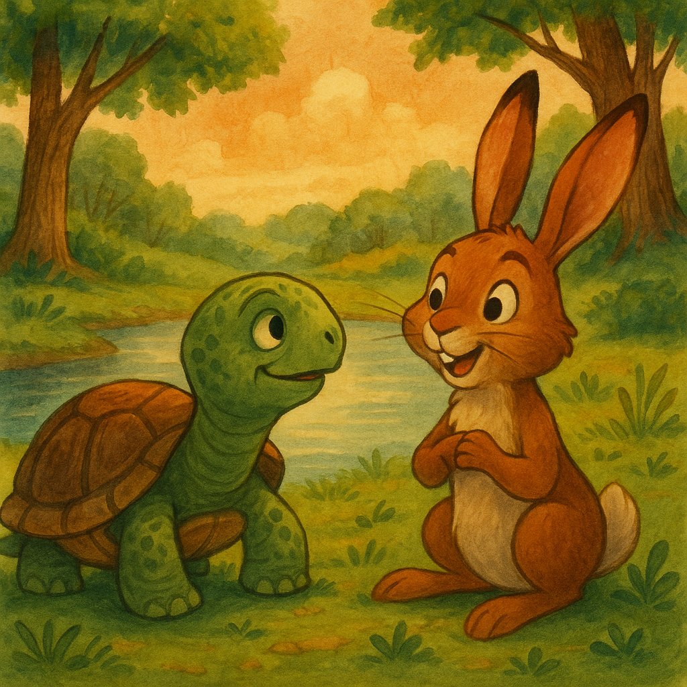

Dibuat Oleh : Rully Faizal
Di sebuah hutan yang rimbun, hiduplah seekor kura-kura bernama Timo. Timo dikenal lambat, tetapi sangat bijaksana. Setiap hari, ia berjalan pelan menyusuri hutan, membantu hewan-hewan kecil yang kesusahan. Suatu hari, terjadi kekeringan panjang, dan semua hewan panik mencari sumber air. Namun, Timo tetap tenang dan menyarankan agar mereka bersabar dan menggali bersama di tempat yang dulu pernah ada mata air.
Banyak hewan tidak percaya pada saran Timo dan memilih pergi meninggalkan hutan. Hanya sedikit yang tinggal dan ikut menggali tanah bersama Timo. Hari demi hari mereka bekerja keras, dan akhirnya, air pun memancar dari dalam tanah. Para hewan yang dulu meninggalkan hutan pun kembali, terkejut melihat kolam kecil yang jernih dan segar.
Kura-kura Timo tidak marah pada mereka yang dulu meragukannya. Ia justru menyambut mereka dengan ramah. Sejak hari itu, seluruh penghuni hutan belajar bahwa kesabaran dan kerja sama bisa mengalahkan kepanikan. Timo pun dihormati sebagai penjaga mata air dan sahabat sejati semua hewan.